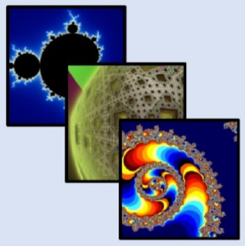
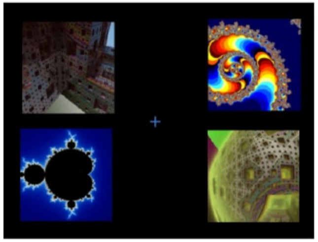
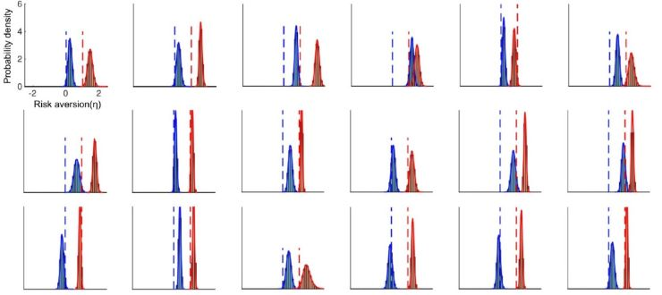
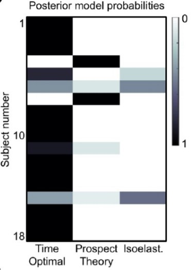

Suppose you have $100 and are offered a gamble involving a series of coin flips. For each flip, heads will increase your wealth by 50%. Tails will decrease it by 40%. Flip 100 times.
The changes in wealth under a sequence of flips of this nature is “non-ergodic”, as the expected value of the bet does not converge with its time-average growth rate. The bet has a positive expected value, 5% of the bettor’s wealth per flip, and the ensemble average across a large enough population will approximate this expected value in growth in overall wealth. But, the time-average growth rate for an individual is approximately a loss of 5% of their wealth with each flip. Most individuals will experience a loss, and in the long-run everyone will. (To understand why this is so, see my primer post on ergodicity economics.)
That many people decline bets of this nature suggests that there may be some wisdom in our decision making process. But what is that process?
Are we risk averse?
As I noted in that previous post, economists have a readily available explanation for the rejection of this bet. People are risk averse expected utility maximisers. As I wrote there:
A risk averse person will value the expected outcome of a gamble lower than the same sum with certainty.
Risk aversion can be represented through the concept of utility, where each level of wealth gives subjective value (utility) for the gambler. If people maximise utility instead of the value of a gamble, it is possible that a person would reject the bet.
For example, one common utility function to represent a risk averse individual is the logarithm of their wealth. If we apply the log utility function to the gamble above, the gambler will reject the offer of the coin flip. [The maths here is simply that the expected utility of the gamble is 0.5\times \ln(150) + 0.5\times \ln(60)=4.55, which is less than the utility of the sure $100, ln(100)=4.61.]
The concept of a risk averse expected utility maximiser with a utility function such as the logarithmic has been a staple explanation for many decisions. The St Petersberg Paradox is one such problem, with that series of bets rarely valued above $10 despite the infinite expected value of the bet. (It is another non-ergodic system.)
But do we need an expected utility function to provide us with such risk aversion? Would a more parsimonious explanation for the rejection of the bet simply be that the person is seeking to maximise the growth rate of their wealth. With that objective and a time-average growth rate of minus 5%, rejection is the obvious thing to do. There is no need for an expected utility function. Rather, the person simply needs a way of deciding whether accepting the bet will maximise the growth-rate of their wealth.
An interesting alignment of economic history and ergodicity economics occurs here. One of the most commonly used expected utility functions is the logarithm (as noted above). People maximise utility by maximising the expected logarithm of their wealth.
Yet, the way to maximise the geometric growth rate of your wealth when facing a multiplicative bet is also to maximise the logarithm of your wealth. The calculations of the expected utility maximiser with a logarithmic utility function and of the time-average growth-rate maximiser are the same.
[E]xpected utility theory as we have presented it above is consistent with growth rate optimisation, provided a suitable pair of dynamic and utility function is used. For multiplicative dynamics, the necessary utility function is the logarithm. That this is the most widely used utility function in both theory and practice is a psychological fluke in the classic mindset; from our perspective it indicates that our brains have evolved to produce growth-optimal decisions in a world governed by multiplicative dynamics, i.e. where entities produce more of themselves.
This parallel means that many of the “puzzles” that expected utility maximisation has been used to solve can also be “solved” by growth-rate optimisation. For instance, insurance or the St Petersberg puzzle provide a challenge for expected wealth optimisation, but are equivalently solved by assuming an expected log utility maximiser or a growth-rate optimiser.
That these two concepts overlap raises a conundrum. An expected log utility maximiser looks much like a growth-rate maximiser in their behaviour (noting that log utility is only one of many functional forms an expected utility maximiser could theoretically have). If we would expect to see the same decision under both expected log utility and growth-rate maximisation in multiplicative dynamics, how can we differentiate the two?
Additive dynamics
Before I answer that question, I am going to detour into the world of additive dynamics. What if I offered you the following bet?
Suppose you have $100 and are offered a gamble involving a series of coin flips. For each flip, heads will increase your wealth by $50. Tails will decrease it by $40. Flip 100 times.
You can see the tweak from the original bet, with dollar sums rather than percentages. The first flip is effectively identical, but future bets will be additive on that result and always involve the same shift of $50 up or $40 down. In contrast, the earlier bet was multiplicative, in that the bettor’s wealth was multiplied by a common factor. As a result, the multiplicative bet scales up and down with wealth.
An important feature of this second series of flips is that the system is ergodic. The expected value of each flip is $5 (0.5\times \$50-0.5\times \$40=\$5). The time-average growth rate is also $5.
Let’s simulate as we did for multiplicative bets in the ergodicity economics primer post, with 10,000 people starting with $100 and flipping the coin 100 times. The below plot shows the average wealth of the population, together with the paths of the first 20 of the 10,000 people (in red).
Code
# Load the required packageslibrary(ggplot2)library(scales) #use the percent scale later# Create a function for running of the bets.bet <-function(p, n, t, start=100, gain, loss, ergodic=FALSE, absorbing=FALSE){#p is probability of a gain#n is how many people in the simulation#t is the number of coin flips simulated for each person#start is the number of dollars each person starts with#if ergodic=FALSE, gain and loss are the multipliers#if ergodic=TRUE, gain and loss are the dollar amounts#if absorbing=TRUE, zero wealth ends the series of flips for that person params <-as.data.frame(c(p, n, t, start, gain, loss, ergodic, absorbing))rownames(params) <-c("p", "n", "t", "start", "gain", "loss", "ergodic", "absorbing")colnames(params) <-"value" sim <-matrix(data =NA, nrow = t, ncol = n)if(ergodic==FALSE){for (j in1:n) { x <- startfor (i in1:t) { outcome <-rbinom(n=1, size=1, prob=p)ifelse(outcome==0, x <- x*loss, x <- x*gain) sim[i,j] <- x } } }if(ergodic==TRUE){for (j in1:n) { x <- start for (i in1:t) { outcome <-rbinom(n=1, size=1, prob=p)ifelse(outcome==0, x <- x-loss, x <- x+gain) sim[i,j] <- xif(absorbing==TRUE){if(x<0){ sim[i:t,j] <-0break } } } } } sim <-rbind(rep(start,n), sim) #placing the starting sum in the first row sim <-cbind(seq(0,t), sim) #number each period sim <-data.frame(sim)colnames(sim) <-c("period", paste0("p", 1:n)) sim <-list(params=params, sim=sim) sim}# Simulate 10,000 people who accept a series of 1000 50:50 bets to win \$50 or lose \$40 from a starting wealth of \$100.set.seed(20200203)ergodic <-bet(p=0.5, n=10000, t=1000, gain=50, loss=40, ergodic=TRUE, absorbing=FALSE)# Create a function for plotting the path of individuals in the population over a set number of flips.individualPlot <-function(sim, t, people){ basePlot <-ggplot(sim$sim[c(1:(t+1)),], aes(x=period)) +labs(y ="Wealth ($)")for (i in1:people) { basePlot <- basePlot +geom_line(aes(y =!!sim$sim[c(1:(t+1)),(i+1)]), color =2) }basePlot}# Plot both the average outcome and first twenty people on the same plot.jointPlot <-function(sim, t, subset) {individualPlot(sim, t, subset) +geom_line(aes(y =rowMeans(sim$sim[c(1:(t+1)),2:(sim$params[2,]+1)])), color =1, linewidth=1)}ergodicPlot <-jointPlot(sim=ergodic, t=100, subset=20)ergodicPlot
Figure 1: Average wealth of population and path of first 20 people
# Function to generate summary statisticssummaryStats <-function(sim, t){ meanW <-mean(as.matrix(sim$sim[(t+1),2:(sim$params[2,]+1)])) # mean wealth medianW <-median(as.matrix(sim$sim[(t+1),2:(sim$params[2,]+1)])) # median wealth num99 <-sum(sim$sim[(t+1),2:(sim$params[2,]+1)]<(sim$params[4,]/100)) #number who lost more than 99% of their wealth numGain <-sum(sim$sim[(t+1),2:(sim$params[2,]+1)]>sim$params[4,]) #number who gain num100 <-sum(sim$sim[(t+1),2:(sim$params[2,]+1)]>(sim$params[4,]*100)) #number who increase their wealth more than 100-fold winner <-max(sim$sim[(t+1),2:(sim$params[2,]+1)]) #wealth of wealthiest person winnerShare <- winner /sum(sim$sim[(t+1),2:(sim$params[2,]+1)])*100#percentage wealth share of wealthiest person# print(paste0("mean: $", round(meanW, 0)))# print(paste0("median: $", round(medianW, 0)))# print(paste0("number who lost more than 99% of their wealth: ", num99))# print(paste0("number who gained: ", numGain))# print(paste0("number who increase their wealth more than 100-fold: ", num100))# print(paste0("wealth of wealthiest person: $", round(winner)))# print(paste0("wealth share of wealthiest person: ", winnerShare, "%"))summary <-(data.frame(meanW, medianW, num99, numGain, num100, winner, winnerShare))}# Generate summary statistics for the population and wealthiest person after 100 and 1000 flips.summaryErgodic100 <-summaryStats(sim=ergodic, t=100)summaryErgodic1000 <-summaryStats(sim=ergodic, t=1000)
The individual growth paths cluster on either side of the population average. After 100 flips, the mean wealth is $609 and the median $600. 87% of the population has gained in wealth. The wealthiest person has $2310, or 0.04% of the total wealth of the population. After 1000 rounds (not plotted here), the mean wealth is $5117 and the median $5100. All 10,000 have gained. The wealthiest person has $10320, or 0.02% of the total wealth of the population. This alignment between the mean and median wealth, and the relatively equal distribution of wealth, are characteristic of an ergodic system.
Code
# Determine how many people (in the first people out of n) experienced zero wealth or less during the simulation.numZero <-function(sim, t, subset=0){#subset data <-if(subset==0| subset>sim$params[2,]){ sim$sim[1:t,2:(sim$params[2,]+1)] } else { sim$sim[1:t,2:(subset+1)] }# number of people who experienced zero wealth or less numZero <-length(data) -sum(sapply(data, function(x) all(x>0))) numZero}numZeroTwenty100 <-numZero(sim=ergodic, t=100, subset=20)numZeroTwenty1000 <-numZero(sim=ergodic, t=1000, subset=20)numZero100 <-numZero(sim=ergodic, t=100)numZero1000 <-numZero(sim=ergodic, t=1000)
Now for a wrinkle, which we can see in the plotted figure. Of those first 20 people plotted on the chart, 12(!) had their wealth go into the negative over those 100 periods. Two more of those first 20 go into the negative over the subsequent 900 periods. We see the same phenomenon across the broader population, with 5439 dropping below zero in those first 100 periods. 5684 drop below zero across the full 1000.
To the extent zero wealth is ruinous when it occurs (e.g., death, you cannot continue to play), that event is severe. If the player only incurs the consequences of their final position, the bet is unlikely to result in ruin but still presents a non-zero threat of catastrophe.
What would an expected utility maximiser do here? For a person with log utility, any probability of ruin during the flips would lead them to reject the gambles. The log of zero is negative infinite, which outweighs all other possible outcomes, whatever their magnitude or probability.
The growth-rate maximiser would accept the bet if they didn’t fear ruin. The time-average growth of $5 per flip would pull them in. If ruin was feared and consequential, then they might also reject.
Risk and loss aversion in the two different worlds
To the title of my post, what light does this shed on risk or loss aversion?
Let us suppose humans are growth-rate maximisers. In a multiplicative world, people would exhibit what is by definition risk-averse behaviour - they prefer a certain sum to a gamble with the same expected value. This is a consequence of maximising the growth rate by maximising the expected logarithm of their wealth. This, however, has a different underlying rationale to explanations of log utility based on either psychology or the diminishing utility of wealth.
What of loss aversion, the concept that losses loom larger than gains? Risk aversion results in a phenomena that looks like loss aversion, in that losses are weighted more heavily due to the diminishing utility of additional wealth. However, loss aversion is a dislike of losses over and above that. It involves a “kink” in the utility curve, so should be observed for small amounts and result in a greater aversion to bets than risk aversion alone would predict.
The growth-rate maximisation model would not lead us to predict loss aversion. Whatever their wealth, growth-rate maximisation does not produce a marked difference between gains and losses beyond that induced by risk aversion. There is no “kink” at the reference point at which losses hurt more than gains are enjoyed. Are there any phenomena described as loss aversion which this theory would suggest are actually growth-rate maximising behaviour? Not that I can think of.
In the additive world, things are more interesting. Growth-rate maximisation is equivalent to wealth maximisation. People aren’t risk averse. (In fact, assuming only growth rate maximisation in an additive environment leaves much about their risk tolerance unspecified.) They simply take the positive value bets.
Here, the broader evidence across experimental economics and psychology places a question mark over the claim (experiment described below excepting). People regularly reject positive value additive bets. There are ways to attempt to reconcile growth-rate maximisation with these rejections. For instance, we could argue that these people are in a multiplicative world, of which the bet is only a small part. Therefore, the bet described as additive is actually part of a multiplicative dynamic. We know little about their broader circumstances. But even then, the rejected additive bets are often so favourable that even a growth-maximiser in a multiplicative dynamic would generally accept them.
Loss aversion is also not a prediction of growth-rate maximising behaviour in the additive world. There is no “kink” at the reference point. Losses and gains have the same weight, no matter their scale.
We could add loss aversion to the growth-rate maximiser in the additive environment by introducing an absorbing state at zero. The path to ruin can be quicker in an additive world than in a multiplicative as the bet sizes don’t scale down with diminished wealth, plus there is the possibility of losing absolutely everything. But what is the agent’s response to this potential for ruin? We would need to add some assumptions additional to that provided by a simple growth-rate maximisation approach.
Ergodicity and behavioural economics
In the twitter-sphere, ergodicity economics has been noted as the “behavioural economics killer”. I’ve already noted loss aversion, but I will state here that many behavioural phenomena remain to be explained even if we accept the foundational ergodicity concepts.
A core group of these behavioural phenomena involve framing, whereby presentation of effectively the same choice can result in different decisions. Status quo bias, the reflection effect, default effects, and the like, remain. So while ergodicity economics gives a new light to shine on decision making under uncertainty, it hasn’t suddenly solved the raft of behavioural puzzles that have emerged over the last seventy years.
Part of that is unsurprising. Much of the behavioural critique of expected utility theory is that our decisions don’t look like expected log utility maximisation decision making (or other similar functions). Those puzzles remain for a growth-rate maximiser that maximises their expected log wealth in a multiplicative environment.
Distinguishing expected utility from growth-rate maximisation: an experiment
Now, to return to an earlier question. If we expect to see the same decision under both expected utility and growth-rate maximisation in multiplicative dynamics, how can we differentiate the two?
A group led by Oliver Hulme ran an experiment that sheds some interesting light on this question (branded the “Copenhagen experiment” in the twitter-sphere). The pre-print reporting the experimental results is available on arXiv, with supporting materials and data on GitHub. Despite some of my questions below, this is a innovative and well thought-out experiment.
The concept behind the experiment was to differentiate between three possible models of human decision making:
Prospect theory, which includes features such as different risk aversion parameters in the gain and loss domains, and loss aversion.
Isoelastic utility, a classic model of expected utility, of which log utility is a special case
Time optimal utility, where changes in utility are determined by linear utility under additive dynamics and by logarithmic utility under multiplicative dynamics.
The third could be differentiated from the other two if the utility function effectively changes when the environment changes between additive and multiplicative dynamics.
To test this, the experimental procedure ran as follows.
Eighteen experimental subjects (actually 20, but two were excluded from analysis) participated in a series of gambles over two days. One day, they were exposed to a series of additive bets. The other day involved multiplicative bets. The order of the days was switched for some subjects. They were not directly informed of the nature of each day.
Each day consisted of a passive session, followed by an active session.
At the beginning of the passive session, each experimental subject was endowed with 1000 Danish Krone (approx $150USD). They then watched a series of fractal images, each of which had an effect on their wealth. Their task through the passive session was to learn the effect of each of these fractals on their wealth. Some examples of the images are below:
Example fractal images 
There were nine fractals on each day, each with a unique effect on wealth. For the multiplicative day, the fractals changed wealth by the following factors: 0.447, 0.546. 0.668. 0.818, 1, 1.223, 1.496, 1.830, 2.239. On the additive day, the changes were: -428kr, -321kr, -214kr, -107kr, 0, 107kr, 214kr, 321kr, 428kr. The subjects observed a sequence of 333 fractals in the passive sequence (each fractal would appear 37 times), giving them a good feel for the effect of each fractal on their wealth.
As the outcome from an equal distribution of these fractals is no growth, each participant ended the 333rd passive fractal with their original wealth of 1000kr. They were then given one additional random fractal to set the level of wealth that they would commence the active session with.
During the active session, they were shown two sets of two fractal images, as in Figure 3 below. The left and the right side represent two possible bets, each of which would involve a 50:50 probability of getting one of the two fractals and the effect of that fractal on their wealth. They were asked to choose one of the bets. For example, choosing the left two images would give them a 50:50 chance for each of those two images on the left.
Example choice 
Hulme and friends then analysed these experimental results to determine which model best described the observed decisions.
The headline finding is illustrated in the following chart, which provides the posterior probability of the parameter of risk aversion for each experimental subject. The blue distribution is the additive day, and the red the multiplicative day.
Posterior probability of the parameter of risk aversion 
A risk aversion parameter of 0 gives us linear utility. A parameter of 1 is logarithmic utility. On that basis, the time optimal utility of ergodicity economics comes out looking strong. There is a change in risk aversion across most participants as they changed between the ergodic and non-ergodic environments.
Hulme and friends also calculated the posterior probability of each model for each participant, with time optimal (the growth rate maximiser) generally having the stronger probability.
Posterior model probabilities 
The authors write:
[T]o approximate time optimal behavior, different dynamics require different ergodicity mappings. Thus, when an agent faces a different dynamic, this should evoke the observation of a different utility function. This was observed, in that all subjects showed substantial changes in their estimated utility functions … Second, in shifting from additive to multiplicative dynamics, agents should become more risk averse. This was also observed in all subjects. Third, the predicted increase in risk aversion should be, in the dimensionless units of relative risk aversion, a step change of +1. The mean step change observed across the group was +1.001 (BCI95%[0.829,1.172]). Third, to a first approximation, most (not all) participants modulated their utility functions from ~linear utility under additive dynamics, to ~logarithmic utility under multiplicative dynamics (Fig. 3d). Each of these utility functions are provably optimal for growing wealth under the dynamical setting they adapted to, and in this sense they are reflective of an approximation to time optimality. Finally, Bayesian model comparison revealed strong evidence for the time optimal model compared to both prospect theory and isoelastic utility models, respectively. The latter two models provide no explanation or prediction for how risk preferences should change when gamble dynamics change, and even formally preclude the possibility of maximising the time average growth rate when gamble dynamics do change. Congruent with this explanatory gap, both prospect theory and isoelastic utility models were relatively inadequate in predicting the choices of most participants.
My major question about the experiment concerns the localised nature of the growth-rate maximisation. These people have lives outside of the experiment and existing wealth (unknown). Yet the behaviour we observed in the multiplicative world was maximisation of the growth rate within the experiment. They effectively maximised the log utility of the in-experiment wealth.
If any of these subjects had any material wealth outside of the experiment and were general growth-rate maximisers, their utility function within this experiment should be closer to linear, despite the multiplicative dynamics. The log function has material curvature for small wealth changes near zero. Once you are further up the logarithmic function (higher wealth), a short section of the function is approximately linear. Even though the stakes of this experiment are described as large (~$150USD with potential to win up to ~$600USD), they are likely not large within the context of the subjects’ broader wealth.
This point forms one of the central planks of the criticism of expected utility theory emerging from behavioural economics. People reject bets that, if they had any outside wealth, would be “no-brainers” for someone with log utility. Most of this evidence is gathered from experiments with additive dynamics, but there is also little evidence of linear utility in such circumstances.
Why did the Copenhagen experiment subjects adopt this narrow frame? It’s unclear, but the explanation must call on psychology or an understanding of the experimental subjects’ broader circumstances.
Another line of critique comes from Adam Goldstein, who argues that “the dynamic version of EUT, multi-period EUT, predicts the same change in risk aversion that EE predicts in a simplified model of CE [the Copenhagen experiment].”
Goldstein is right that EUT predicts a reduction in measured risk aversion in an additive environment. But Goldstein’s analysis depends on people being able to observe each flip and their change in wealth, and then changing their behaviour accordingly. If they could take the bets flip by flip, the first bet on its own is unattractive for a risk averse utility maximiser. But it is possible (indeed likely) for them to reach a level of wealth where a single bet is attractive (in this case, above a wealth of $200), in which case they can continue to accept. Conversely, if they head toward ruin, they can start to reject bets.
The possibility of getting up to a level of wealth where the bet becomes attractive can lead an expected logarithmic utility maximiser to accept the first bet due to the potential utility from later bets. The way to determine whether they will do this uses a technique called dynamic programming, which involves working from the last bet backward to work out the expected utility of each single bet.
However, I am unconvinced this critique applies to the experiment by Hulme and friends. The experimental subjects never got to observe the changes in their wealth during the active session (although they might weakly infer the likely direction based on the favourability of the bets they were exposed to). As a result, I’m not convinced we would see the change in risk aversion observed in the experiment under an expected utility framework.
That inability to observe outcomes also makes the experiment a weaker examination of dynamics over time than it might otherwise be. In some ways, it is a single-period game where all outcomes are realised simultaneously, multiplying or adding at that point. The absence of seeing how subjects act given a change in wealth removes the ability to see some of the distinguishing phenomena. For instance, the time optimal utility maximiser would not increase risk aversion after losing in the additive environment, whereas in that same environment the traditional utility maximiser would be more likely to reject when the bets become a larger proportion of their wealth. The prospect theory decision maker may become risk seeking if they perceived themselves to be in the domain of losses. The authors note that the lack of update is because they want to avoid mental accounting, but that is, of course, a feature of prospect theory (if I understand their use of the term mental accounting). (I should also say that I understand the lack of updating given the multiple purposes of the experiment, but it would be great to see that relaxed in future iterations.)
Goldstein also raised a second possible driver of the reduced risk aversion in the additive scenario. Experimental subjects were paid on the based on a random draw of 10 of their active gambles. If the final wealth for an experimental subject from those 10 gambles was negative, they would be given a new draw of 10 gambles. In effect, they were protected from the most severe risks in the additive case, which would reduce risk aversion.
One possible mitigant of this effect is that the experimental subjects were not explicitly told they could not lose (although they would likely have inferred they could not suffer loss). I am also not convinced that the strength of this effect would be enough to result in purely linear utility as was observed, but it should be accounted for.
Code
# Simulate the payments to participants based on their actual choices.library("dplyr", quietly =TRUE, warn.conflicts =FALSE)set.seed(20200321)#Import the data on the choices madefor (i in1:19){ importData <-read.csv(paste0("https://raw.githubusercontent.com/ollie-hulme/ergodicity-breaking-choice-experiment/master/data/TxtFiles_additive/", i, "_2.txt"), sep="")[1:312,] #limit to 312 entries as subject 3 has 314 importData <-select(importData, earnings, KP_Final, Gam1_1, Gam1_2, Gam2_1, Gam2_2)assign(paste0("subject_data_", i), importData)}payment <-data.frame(matrix(NA, nrow=10, ncol=18))#Simulate 1000 payments for each participantfor (i inc(1:19)){ for (j in1:1000){ subject_data <-get(paste0("subject_data_", i)) subject_data <- subject_data %>%mutate(Gam1 =case_when(KP_Final==9~ Gam1_1, KP_Final==8~ Gam2_1)) %>%mutate(Gam2 =case_when(KP_Final==9~ Gam1_2, KP_Final==8~ Gam2_2)) %>%mutate(result =mapply(function(x,y){sample(c(x,y),1)}, x=Gam1, y=Gam2))#Payment is the initial endowment from the passive phase plus a draw of 10 gambles payment[j,i] <- subject_data$earnings[1] +sum(sample(subject_data$result, 10)) #starting money plus random draw of 10 }}colnames(payment) <-c(1:19)#remove subject 5 from analysis as excluded in paperpayment <- payment %>%select(-5)#Determine how many participants made a lossnumGain <-sum(payment>0, na.rm=TRUE)numLoss <-sum(payment<0, na.rm=TRUE)percentLoss <- numLoss/(numGain+numLoss)*100
I simulated the potential payments of the participants based on the choices they actually made. Only 4% of the potential payments involved a loss, which would have triggered the redraw. That affirms my view that, while it should be accounted for, it is unlikely to explain the experimental result.
A related point is that the paths involving negative wealth were removed from the passive session on the additive day. This means the subjects were not conditioned to see these negative potential consequences.
Code
# Simulate the passive paths for the Copenhagen experiment.passiveSim <-function(type="additive", people=10000, start=1000){#parameters used in Copenhagen experiment add <-c(-428, -321, -214, -107, 0, 107, 214, 321, 428) mult <-c(0.447, 0.546, 0.668, 0.818, 1, 1.223, 1.496, 1.830, 2.239) add333 <-rep(add,37) mult333 <-rep(mult, 37) gamblePath <-cbind(rep(start, people), matrix(data =NA, nrow = people, ncol =333))if(type=="additive"){for (i in1:people){ gamble <-sample(add333, size=333, replace=FALSE)for (j in1:333){ gamblePath[i, j+1] <- gamblePath[i, j]+gamble[j] } } }if(type=="multiplicative"){for (i in1:people){ gamble <-sample(mult333, size=333, replace=FALSE)for (j in1:333){ gamblePath[i, j+1] <- gamblePath[i, j]*gamble[j] } } } gamblePath}addSim <-passiveSim(type="additive")multiSim <-passiveSim(type="multiplicative")# Examine how many simulated paths conform to the required range.#function to output number below lower limit, above upper limit, and within the range of the twonumRange <-function(sim, lower=0, upper=5000, people=10000){ low <- people -sum(apply(sim, 1, function(x) all(x>lower))) up <- people -sum(apply(sim, 1, function(x) all(x<upper))) range <-sum(apply(sim, 1, function(x) all(x>lower & x<upper))) df <-data.frame(low = low/people*100,up = up/people*100,range = range/people*100 ) df}addSimRange <-numRange(addSim)multiSimRange <-numRange(multiSim)multiSimRange1 <-numRange(multiSim, lower=1)multiSimRange10 <-numRange(multiSim, lower=10)
In the simulations I conducted of the additive passive day, 90% of the simulations breach that zero lower bound. 26% breach the 5000kr upper bound (some of the same paths that went below zero), leaving only 2% of the trials that could be provided to subjects on the passive day. In contrast, passive multiplicative paths could not be excluded for going below zero, despite providing a hair-raising ride. 31% of the passive multiplicative paths that I simulated involve wealth dropping to less than 1kr (a 99.9% loss). 60% of the passive multiplicative paths involve wealth dropping to less than 10kr (a 99% loss). Then, at the top end, 92% of the passive multiplicative paths went above $5000kr, leading to their exclusion.
The result is that the subjects were conditioned on a limited subset of additive paths that excluded the most negative moments (although also the 26% highest), and on multiplicative paths that excluded the most positive moments. This is a large asymmetry. Obviously, each person saw only one path, and they might have ended up with that combination anyhow, but the systematic conditioning of subjects with benign passive paths and harrowing multiplicative paths should be considered a potential factor in the response of subjects to those fractals.
It could be argued that despite the difference in paths, people are simply learning the effect of the fractals that they bet on. However, I am not convinced that experimental subjects would be unaffected by seeing the potential cumulative effect of these bets.
As a result, my preliminary view on this experiment is that it provides potential evidence that the dynamics of the environment can influence our model of decision making. However, the experimental results involve behaviour that doesn’t seem to be accounted for by any of the models, and it involves a conditioning process that I’m not completely sold on.
Some of my other observations on the experiment include:
The experiment involved several “discrepant trials” where linear utility should have generated one choice and log utility another. These trials generated moderate evidence against the hypothesis of linear utility under additive dynamics. You can also see in Figure 4 above (and in other parts of the paper) that the experimental subjects had mild risk aversion in the additive environment. Similarly, the coefficient of risk aversion in the multiplicative environment seems slightly greater than one - indicating more risk aversion than log utility. (Saying this, I wouldn’t read too much into these particular numbers.)
Although there is a consistent shift for most subjects between the two environments, there is a lot of variation in their degree of risk aversion. This could be due to outside factors, such as total wealth, but raises the question of how much idiosyncracy there is between people in their approaches to growth-rate maximisation (or whatever else it is they are maximising).
I’m not convinced that the experiment had a design with the strength necessary to elicit a loss aversion parameter of prospect theory (assuming it exists). Every bet involved a choice between a two gambles involving a gain and a loss, rather than having a mix of gain-gain and gain-loss options that might highlight loss aversion. Shifting between those frames would also provide more power to tease out the risk aversion coefficients in the loss and gain domains. (I should note that I’m not confident that the experiment doesn’t have the necessary strength - I use the words “I’m not convinced” deliberately.)
There was a required choice between the gambles, which eliminates status quo effects, an arguable driver of many behavioural dynamics (as argued by David Gal).
The elicitation of preferences where people need to learn the probabilities through experience is one of the experimental circumstances where loss aversion has generally not been shown to occur (see this literature review by Yechiam and Hochman (pdf)). This provides another reason we might not not expect to elicit loss aversion in this experiment.
The set up is complicated. The subjects need to learn fractal relationships. Their payout is based on a random selection of 10 of their bets. The multiplicative environment harder to learn. Does uncertainty drive some of the increase in risk aversion?
Summary
Where does this leave us? I take the following lessons from ergodicity economics and the experimental evidence to date:
The concept that simple growth-rate maximisation results in the same observed behaviour as expected logarithmic utility maximisation in a multiplicative environment (possibly the world we live in), yet possibly provides a more parsimonious explanation, is important. This deserves much more research, including the question of whether this is a model on which we could build the broader decision making architecture. Would prospect theory look different if built on this foundation?
We don’t need to throw everything out of the window. Maximising expected utility through using the logarithm of wealth is equivalent to maximising the growth rate in a multiplicative environment. We can continue to use this functional form in much economics work, but should consider a different interpretation on its use.
For decision-making under uncertainty, there is a case for placing greater weight on the logarithmic “utility function” over other more highly-specified utility models that do not maximise the growth rate. On this point, Paul Samuelson led a somewhat acrimonious debate about whether an investment strategy using the Kelly criterion - which maximises the geometric growth rate (discussed in my ergodicity economics primer post) - was an appropriate investment strategy. I’ll cover that debate in more detail in a future post, but one of Samuelson’s central points was that Kelly criterion investments are only optimal for an expected log utility maximiser, not for people with other utility functions. The ergodicity economics approach attempts to circumvent this debate by suggesting that our utility function is growth rate maximisation.
A behavioural response to possible absorbing states (i.e. ruin, death) would seem to require an addition to the growth-rate maximisation model, rather than being directly derived from it. The growth-rate maximisation model also says little about risk-return trade-offs, particularly in an additive environment. (This was also a point raised by Samuelson in the debate about the Kelly criterion, as growth-rate maximisation over finite time horizons can result in catastrophic loss.)
There are a lot of decision-making phenomena that would require substantial additions to the ergodicity economics framework if they were to be incorporated. Examples include status quo bias, framing effects, non-linear probability weighting, and rejection of many bets that would seem to maximise a person’s time average growth rate if accepted (or that require an inordinate amount of storytelling to justify it). (Peters and friends have some papers on the application of ergodicity economics to discounting that I’ll deal with in another post.)
On that final point, Peters often mentions that expected utility theory was an attempt to rescue the failure of expected wealth maximisation to capture decision dynamics. One of the benefits of his model is that the need for psychological explanations is removed.
However, an attempt to remove psychology from decision models will leave a lot of behaviour unexplained. There is a fair question about “what psychology?” is required, and whether this is the psychology of behavioural economics, ecological decision making, resource rationality or something else (see my critical behavioural economics and behavioural science reading list for a flavour of this). But in many situations people do not appear to maximise the growth rate of wealth.
My other posts on loss aversion can be found here:
{kind=link}